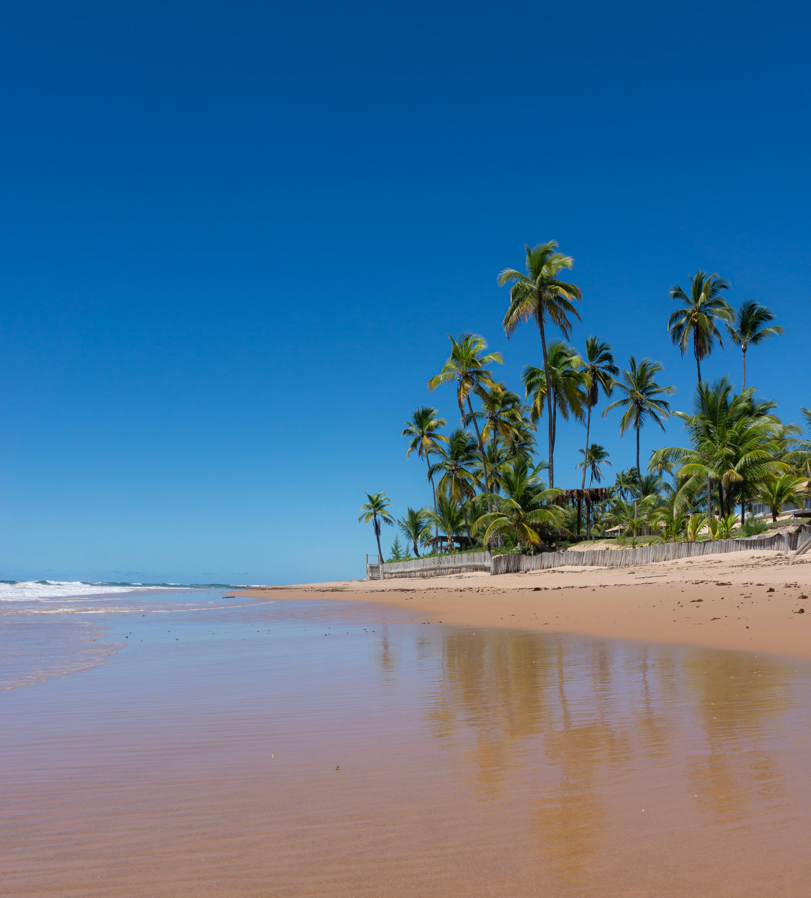

Why Ghana?
Ghana, officially the Republic of Ghana
The name Ghana comes from Wagadu, an empire in west Africa from the 3rd to 12th centuries; Wagadu was termed Ghana by Arab traders involved in the trans-Saharan trade. Ghana is thought to originate from the title Kaya Maghan of the rulers of Wagadu, which translates as ruler of gold.
As the Gold Coast colony prepared for independence, the nation's leader and first prime minister later first president Kwame Nkrumah who together with five others known as The Big Six, led Ghana to independence, settled on Ghana, aiming to evoke a sense of unity and liberation among the Ghanaian people.